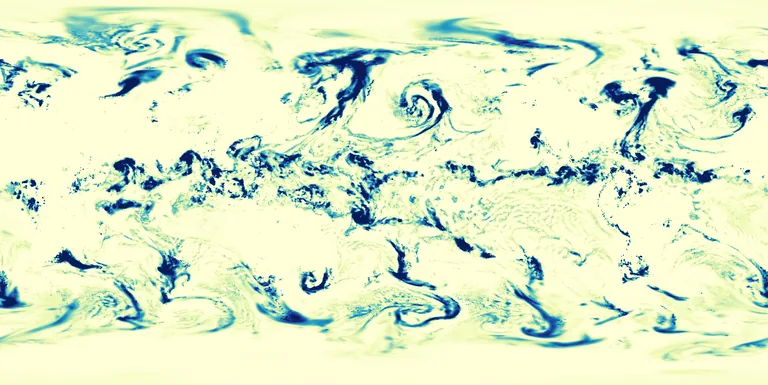

Benchmark / Near-lossless / era5-tp-1h / era5-tp-1h-08
era5-tp-1h-08
2023-10-22 · sample details

Metadata
| id | era5-tp-1h-08 |
|---|---|
| source | ERA5 hourly data on single levels, Copernicus Climate Data Store, GRIB |
| asset | reanalysis-era5-single-levels?variable=total_precipitation&date=2023-10-22&time=00:00/23:00&format=grib |
| crs | EPSG:4326 |
| transform | -0.125 0.25 0.0 90.125 0.0 -0.25 |
| datetime_start | 2023-10-22T00:00:00Z |
| datetime_end | 2023-10-22T23:00:00Z |
| bands | tp@00:00 to tp@23:00, 24 planes |
| shape | 24x721x1440 |
| dtype | uint16 |
| unit | m |
| scale |
|
| offset |
|
| input_sha256 | a81d9af258deca60b9fb1d7c2ccf26d831d56ab531fb5e11c6f64a7704e40a60 |
| variable | total_precipitation |
| grib_short_name | tp |
| bits_per_value | 16 |